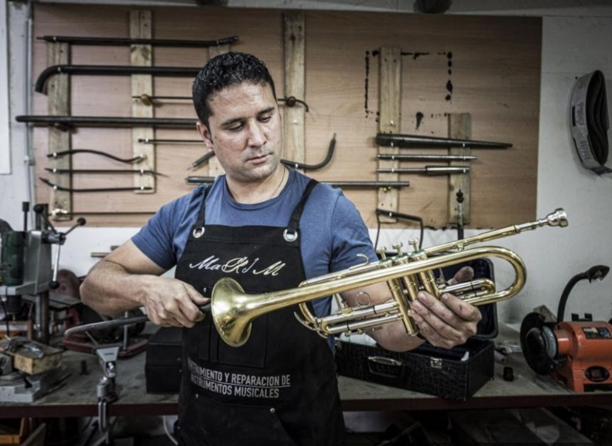
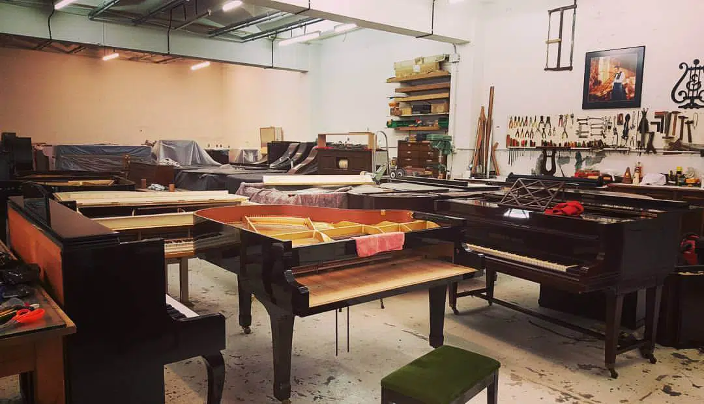
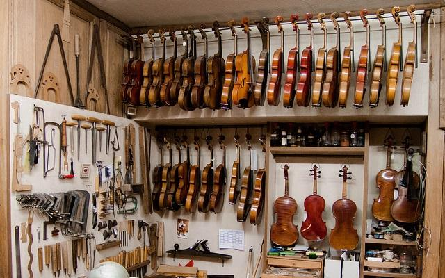
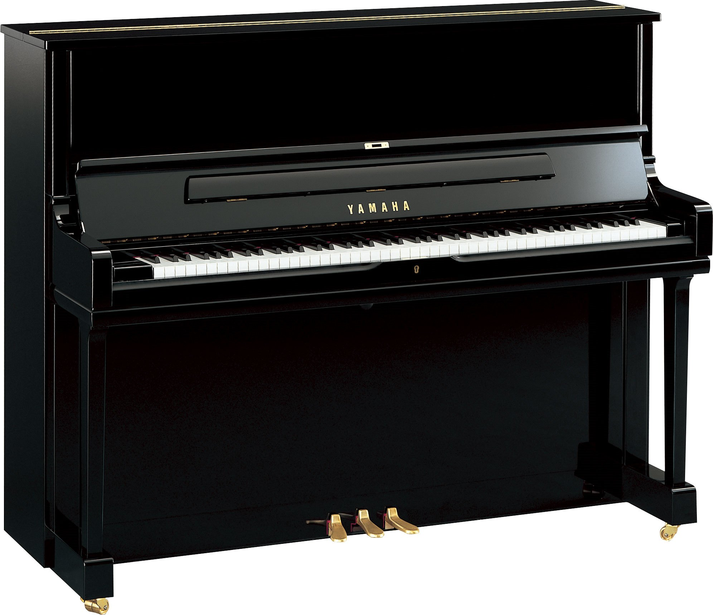
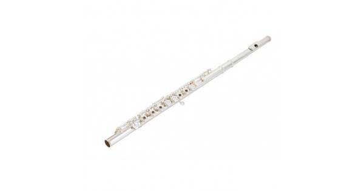
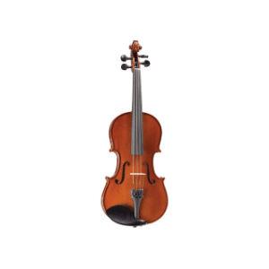
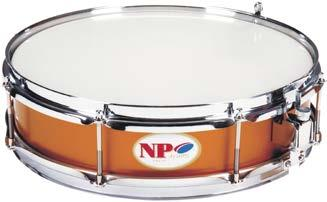

Servicios
En nuestra tienda podrás comprar, vender y reparar instrumentos de viento, cuerda y tecla por nuestros grandes profesionales.



Aqui puedes ver los instrumentos en venta:

Piano Yamaha modelo YUS 1.
Disponible en 3 colores: Negro, blanco y madera de roble.
Precio: 10.600€.

Flauta travesera Modelo:GX-RC-EO-III
Disponible en 2 colores: Plateado y dorado.
Precio: 6.000€.

Violin de concierto Modelo: Scala Vilagio R.O. Guarneri Superieur
Disponible en 2 colores: Marron oscuro.
Precio: 9.599€.

Caja de concierto Modelo: Caja 35x09 cm, Mod. 9350, plateada
Disponible en 2 colores: Plateado y dorado
Precio: 1.499€.